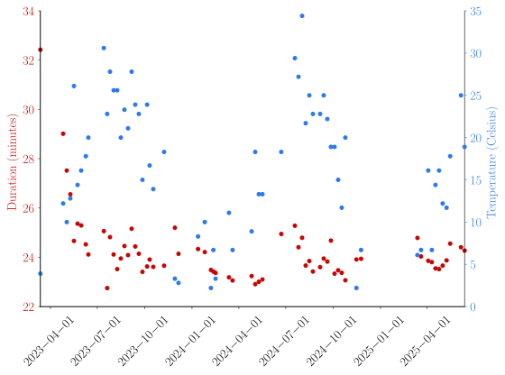

July 12, 2025
My friends and I took the habit to run the stairs at the Harvard stadium. The principle is simple: walk (or run!) up the big steps and down the small ones every row (37 times). I record my time every week to keep track of my progress with my Garmin watch. In the summer heat my friends and I asked ourselves how much the weather impacts our time. So I wrote a python program that downloads my time from the Garmin server, and retrieves weather data at those times and location.
I used the python-garminconnect package to do so.
I usually record my stadium runs as run activities.
I thus need to retrieve the run data from garmniconnect; note that I assume all stadium runs are within my last 1000 running activities, which is likely:
def retrieve_stadium_dates_and_durations(garmin):
start_times = []
durations = []
activities = garmin.get_activities(start=0, limit=1000, activitytype='running')
for activity in activities:
if is_stadium_run(activity):
start_times.append(activity['startTimeLocal'])
durations.append(activity['duration'])
return start_times, durations
where garmin is a Garmin object that contains my credentials.
All my runs are not stadium runs. This is why I filter them using the following function, assuming each stadium run starts within 100m of the stadium location, and has a sufficient elevation gain to distinguish from the relatively flat runs in Boston (my watch usually measures between 350 and 380m for a stadium run):
# lat, lon of the stadium
LAT_STADIUM = 42.3669
LON_STADIUM = -71.1260
def is_stadium_run(activity):
try:
lat = activity['startLatitude']
lon = activity['startLongitude']
el = activity['elevationGain']
m_per_degrees = 110 * 1000
dist = m_per_degrees * ((lat - LAT_STADIUM)**2 + (lon - LON_STADIUM)**2)**(1/2)
dist_threshold = 100 # m
if dist < dist_threshold and el > 300 and el < 400:
return True
except:
return False
return False
Now all we need to do is retrieve weather data at these activity times. Here I have chosen to use meteostat to do so:
from meteostat import Point, Hourly
def retrieve_weather_data(start_times):
location = Point(LAT_STADIUM, LON_STADIUM)
date_times = pd.to_datetime(start_times)
date_times_hour = date_times.round('h')
start = date_times_hour.min().to_pydatetime()
end = date_times_hour.max().to_pydatetime()
data = Hourly(location, start, end)
data = data.fetch()
df = data.loc[date_times_hour]
df = df.reset_index()
df.rename(columns={'index' :'datetime'}, inplace=True )
df['datetime'] = date_times
return df
Note that the data is hourly so I had to round the start times to the closest hour. We are now ready to plot the durations and temperature of all my stadium runs!
The plot below shows the activities duration and the temperature over time.

We can observe a few trends:
But much more analysis is needed - this will be the object of a future post.